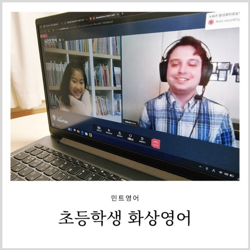

상담 신청
학년, 과목, 목표를
간단하게 알려주세요.
이번 달 신규 매칭 328건
성적보다 먼저 아이를 이해하는 것.
검증된 선생님과 시작하는 1:1 맞춤 과외

수많은 선택 속,
상상코칭이
다른 이유
OUR PROCESS
상담부터 첫 수업까지, 아이에게 맞는 방법으로
상상코칭이 꿈꿈하게 연결합니다.
학년, 과목, 목표를
간단하게 알려주세요.
전담 매니저가 학습 성향과
필요한 조건을 파악합니다.
수많은 선생님 중
가장 잘 맞는 분을 제안합니다.
무료 체험 후
천천히 결정하세요.
MEET YOUR MATCH
상상코칭의 선생님은 단순히 문제를 푸는 사람이 아닙니다. 아이의 속도와 마음을 살피며, 스스로 공부하는 힘을 길러주는 파트너입니다.
선생님 둘러보기 ↗ ✓ VERIFIED
✓ VERIFIED수학 · 중고등 내신 / 수능
REAL STORIES
문법은 외워도 지문을 설명하는 게 어려웠는데, 수업마다 제 생각을 영어로 정리해 말하면서 긴 문장도 자신 있게 표현하게 됐어요.

낯을 많이 가려 영어로 대답하기를 어려워했는데, 아이가 좋아하는 주제로 대화를 이끌어 주시니 이제는 먼저 수업 준비를 합니다.

온라인 수업이라도 풀이 과정을 바로 확인해 주시고 막힌 부분을 다시 설명해 주셔서, 모르는 문제를 그냥 넘기지 않는 습관이 생겼습니다.
START HERE
지금 상담을 남겨주시면
전담 매니저가 빠르게 연락드립니다.
FAQ
평일 기준 평균 30분 이내에 전담 매니저가 연락드립니다. 아이의 상황을 먼저 충분히 듣고 가장 잘 맞는 선생님을 제안해드려요.
네, 학생의 상황과 선호에 따라 방문 또는 화상 수업을 자유롭게 선택할 수 있습니다.
아니요. 무료 체험 수업 후 충분히 고민하고 결정하실 수 있습니다.